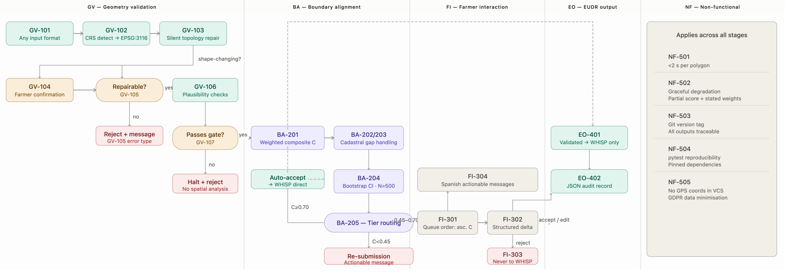
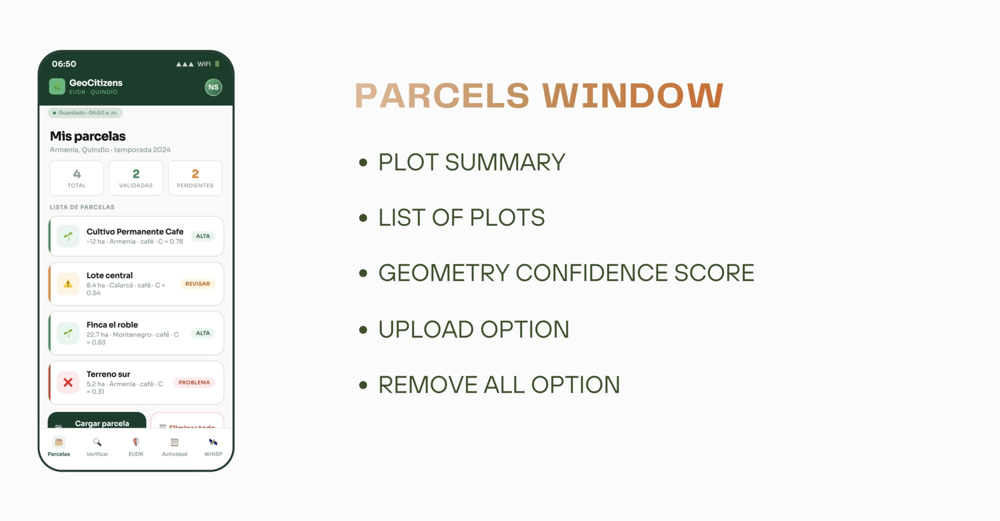
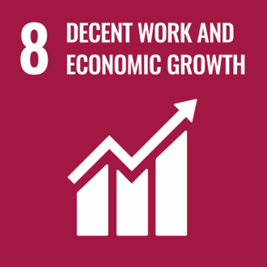
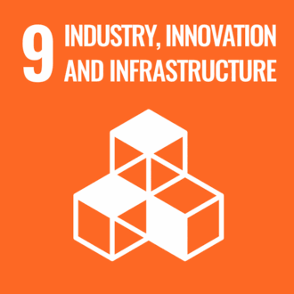
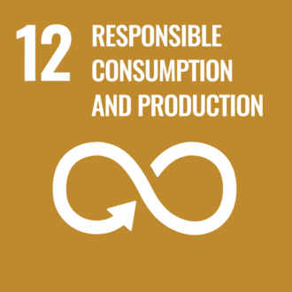
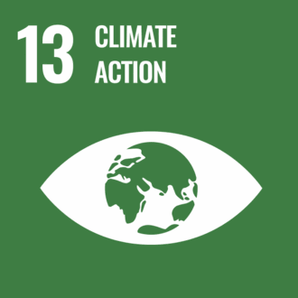
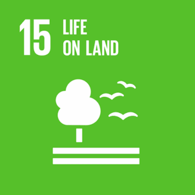

Theoretical foundation
Position GeoAI as an enabler of accessibility, scalability, automation, decision-making and transparency.
GeoAI · EUDR · Smallholder inclusion
Copernicus Master in Digital Earth (CDE)
Submitted in partial fulfilment of the requirements for the joint Master's degree, awarded by Paris Lodron University of Salzburg and Palacký University Olomouc.
This research exposes a comprehensive framework responding to the rapid expansion of geospatial artificial intelligence (GeoAI) and demonstrating its practical applicability.
The framework is applied to a real-world case study that automates plot geolocation validation, integrates Earth Observation and GeoAI models, and communicates clear European Union Deforestation Regulation (EUDR) compliance results through an interactive dashboard.
Thesis aim
Position GeoAI as an enabler of accessibility, scalability, automation, decision-making and transparency.
Support Colombian smallholder coffee and cacao farmers under EUDR compliance pressure.
Document a reusable architecture and assessment logic that can extend beyond the case study.
Research objectives
Explain its role in regulatory and sustainability-focused environments.
Automate geolocation validation and integrate GeoAI and Earth Observation evidence.
Translate technical outputs into accessible and interpretable plot-level information.
Present the methodology at an abstract level while protecting project-specific interests.
Results · GeoAI compliance pipeline
Choose a phase to inspect its purpose and contribution.
P0 · Harmonization
Normalize formats, coordinate reference systems and attributes so every production plot can enter a consistent and reproducible workflow.

Results · GeoCitizens Dashboard prototype
Six connected windows guide farmers from parcel registration and geometry verification to EUDR evidence and reporting.

Review the plot inventory, geometry confidence and parcels that require action.
Real impact
The case study combines technological innovation with a human-centred compliance perspective.
Make complex geospatial evidence more accessible to smallholder farmers with limited technical capacity.





Contact
Questions about the methodology, data, or case study region are welcome.
Nicole Salazar-Cuellar · Geoscientist